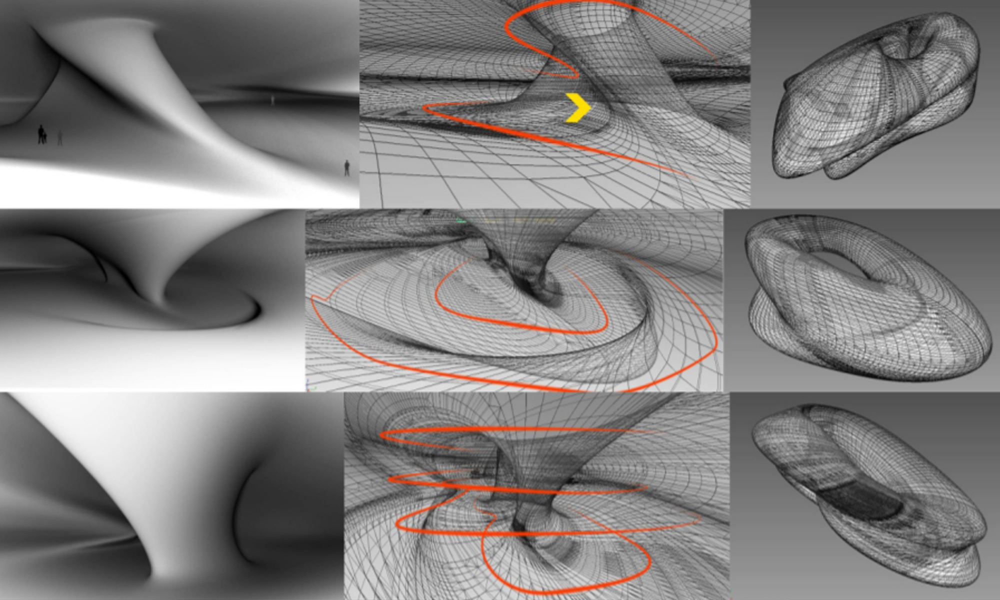
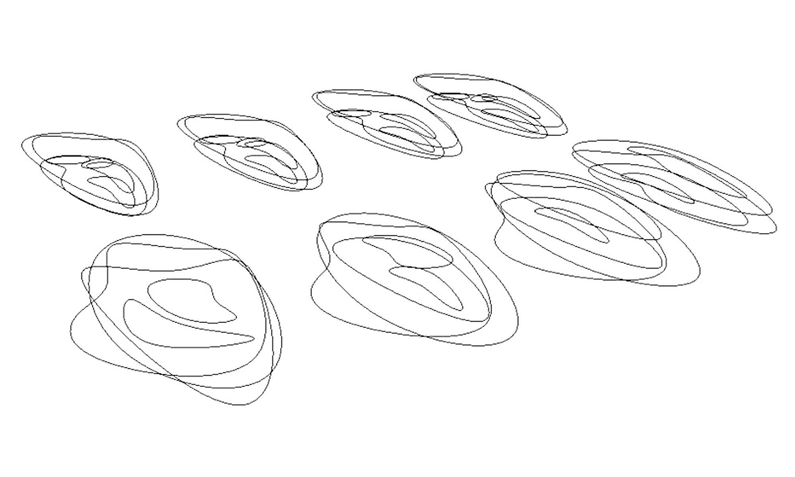

The form and space matter is one of the main concerns of architects and a big deal of designing time is devoted to it. Form and space are a kind of exploration to create the form that the designer desired. Through this process he could use his ideology to reach numerous examples and go through a more logical designing process. Of course, this is not merely an exercise for the creation of form but can start a monologue between the designer and himself. With the development of design technology in digital age, a new existence is provided to the architects which led to the creation of new spaces and architectural thinking. In addition a new world, the digital architecture has provided the designers with new tools and method of designing that has given interest to the form of exploration, and also gives the designer the possibility to go beyond the curiosity of the concept of form and space. One of the tools used in the modeling process is NURBS, a means of handy designing the fluid forms. The fluid forms as the crust have great capabilities because their external form and space are eclipsed together and also usually their dimensions are not distinguishable and make the space solid. The objective of doing this is the combination of designing in prevailing exploration that can convert the designing concept to designing knowledge. The research method in this study of form and space is a simulation of this process in a software. It has been tried in this research to have monologue and the first results of form and space lead to other forms and spaces. At the end, the results can be observed like racial and typological forms.(Published conference paper) .